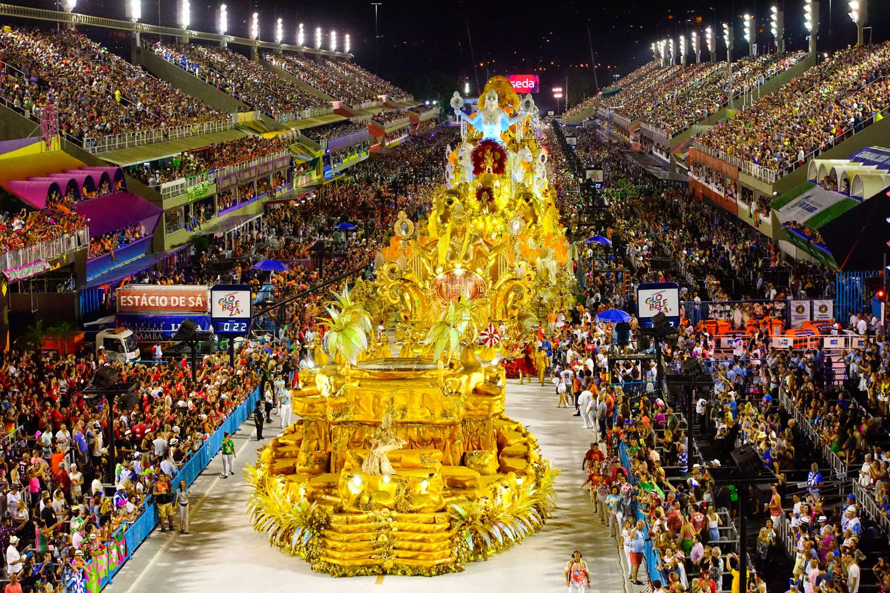
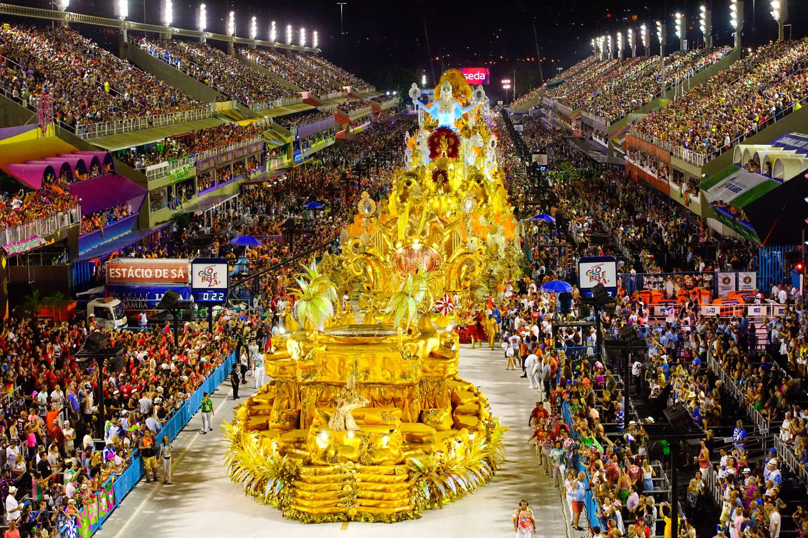
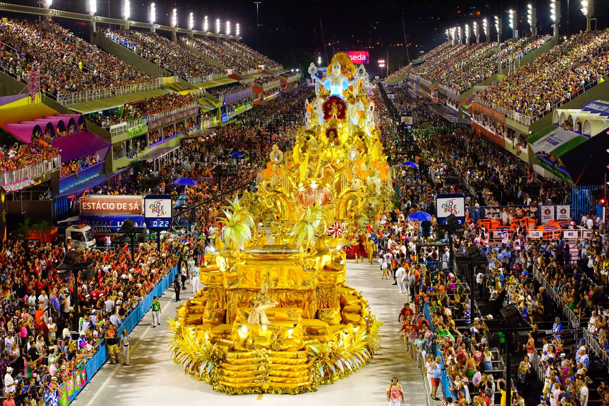

Galeri Foto Festival

 

Mengenal berbagai festival budaya dari seluruh dunia.
Jelajahi keunikan tradisi dan budaya dari berbagai belahan dunia.
Perayaan warna yang melambangkan kemenangan kebaikan atas kejahatan.Festival Holi merupakan festival Hindu yang berasal dari legenda dan mitos India. Festival ini dirayakan untuk menyambut musim semi dan merayakan kemenangan kebaikan atas kejahatan. Asal usul festival Holi dikaitkan dengan legenda Hiranyakashipu, raja iblis yang meminta bantuan saudara perempuannya, Holika, untuk membunuh putranya, Prahlad. Holika terbakar saat mencoba membunuh Prahlad, sedangkan Prahlad selamat karena perlindungan Dewa Wisnu. Secara religius, Holi berasal dari legenda Hiranyakashipu, raja iblis yang menganggap dirinya sebagai dewa namun sang putra, Prahlad tetap setia menyembah Dewa Wisnu.Festival ini juga berkaitan dengan Kisah cinta antara Dewa Krishna dan Radha. Krishna yang berkulit gelap merasa iri pada Radha yang berkulit putih. Ibunya, Yashoda, menyarankan agar Krishna mewarnai wajah Radha dengan warna apa pun yang disukainya.Festival tersebut termasuk festival paling tua dan paling berwarna di India.Holi dirayakan dengan berbagai cara,seperti Menyalakan api unggun dalam ritual Holika Dahan,Melempar bubuk berwarna dan air,Menari,Berpesta,Mengenakan pakaian tradisional,Menyanyikan lagu,Holi merupakan festival yang merayakan persatuan, keberagaman, perdamaian, toleransi, dan cinta sesama manusia.
Karnaval terbesar di dunia dengan parade megah dan kostum penuh warna.Festival Rio Carnival di Brasil memiliki sejarah yang panjang, dimulai sejak zaman kolonial. Sejarah Rio CarnivalPara penjajah Portugis membawa tradisi karnaval ke Brasil pada abad ke-17. Awalnya, karnaval ini adalah pesta yang diadakan sebelum Prapaskah, dimana orang-orang akan berpesta pora, menikmati makanan, minuman, dan berbagai hiburan seperti bermain air, lempar tepung,dan lumpur.Perayaan ini dipengaruhi oleh berbagai budaya, termasuk tradisi Eropa, Afrika, dan adat istiadat lokal. Ada beberapa tahapan perkembangan Rio Carnival,Tahun 1641 Perayaan karnaval pertama di Brasil, yang disebut Préstitos, diadakan untuk merayakan penobatan John IV dari Portugal. Tahun 1723 Perayaan karnaval sederhana pertama di Rio de Janeiro, yang diperkenalkan oleh imigran Portugis. Akhir abad ke-19Parade terorganisir, band militer, dan kendaraan hias megah mulai diperkenalkan.Tahun 1840-anPesta dansa karnaval dengan musik polka dan waltz menjadi populer. Menjelang akhir abad ke-19 Parade jalanan dengan kereta kuda dan band militer menjadi pusat perhatian karnaval. Tahun 1920-an Sekolah samba pertama dibentuk di Rio. Tahun 1947 Perayaan karnaval kembali dimulai setelah Perang Dunia II.Tahun 1984 Sambadrome dibangun dan menjadi tempat resmi Karnaval Rio. Saat ini, Rio Carnival merupakan perayaan yang sangat terkenal dengan Parade Samba dan pesta jalanan yang meriah.

Setiap festival memiliki cerita dan makna yang unik. Dari festival keagamaan hingga perayaan budaya, semuanya memiliki pesan yang mendalam.Setiap festival dunia menyimpan tradisi yang kaya dan unik, mulai dari tarian penuh semangat hingga kuliner khas yang menggugah selera. Temukan tradisi-tradisi yang telah diwariskan turun temurun dan bagaimana mereka merayakan kehidupan, kebudayaan, dan komunitas.